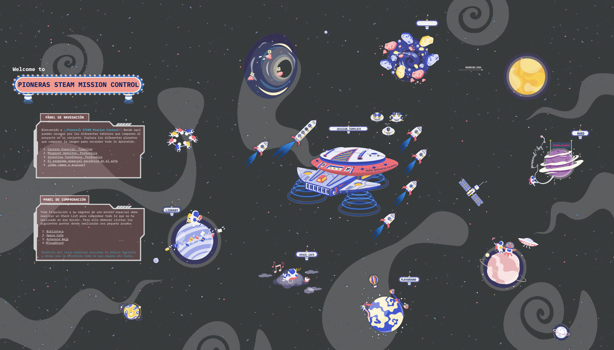

Actividad con retroalimentación
Mediante esta actividad se pretende, de una forma más lúdica y vivencial, a través de un breakout, realizar un repaso los contenidos fundamentales de la que hemos trabajado en estas sesiones acerca de la carrera espacial, sus hitos y su protagonistas; prestando especial atención a Valentina Tereshkova y Margaret Hamilton.
